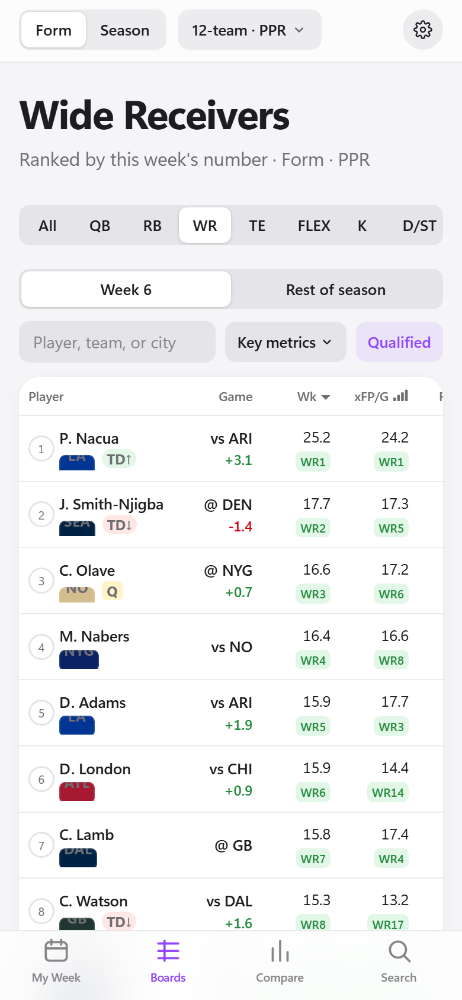
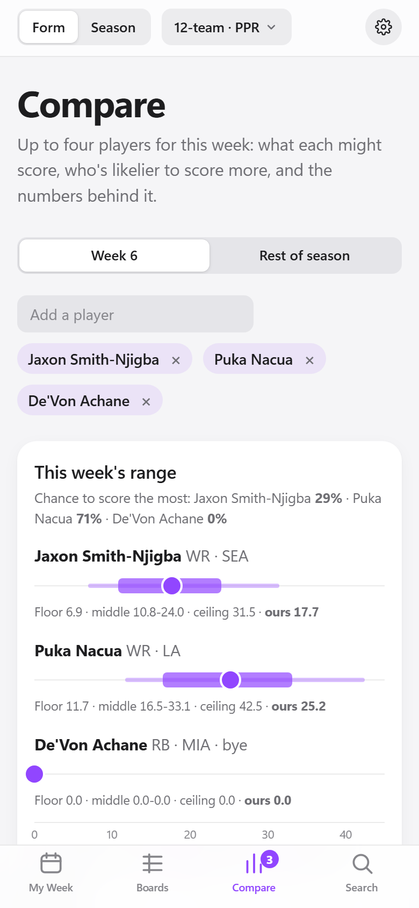
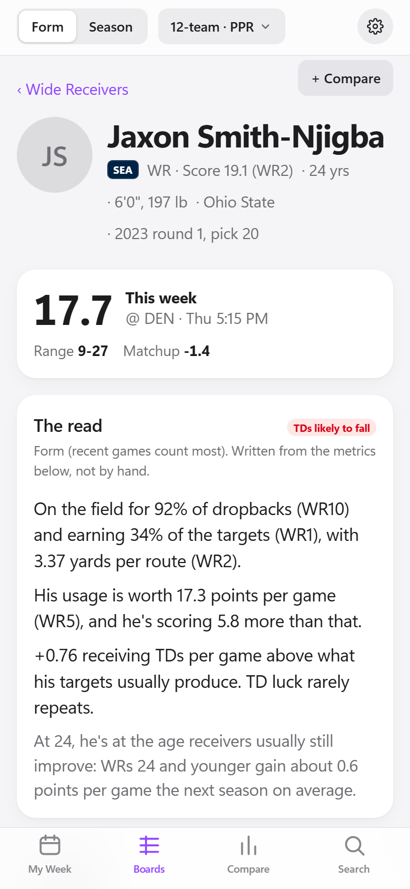
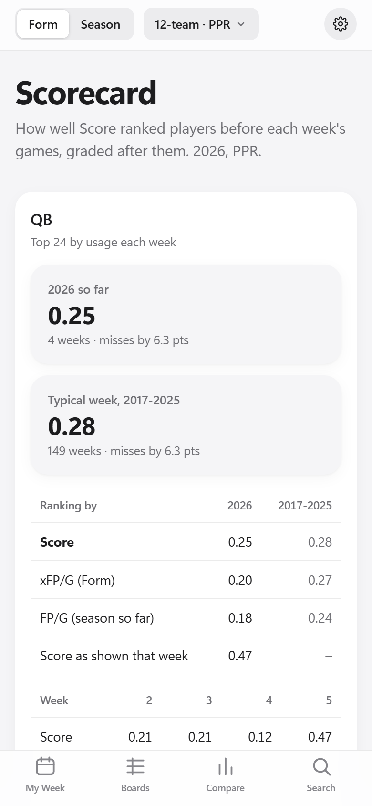

Personal project · Showcase
Metrics That Matter
A fantasy football app built on the few statistics that predict fantasy points, applied to my own leagues and their scoring rules, with the evidence for each number one tap away.
Private, early-stage app
The app uses data I am licensed to use for a personal project, including data from the FantasyPros API, so I can't make it public or share that data. The screenshots and examples on this page use only free NFL statistics or made-up numbers.
What it's for
The statistics that predict fantasy points, like expected fantasy points, target share and yards per route run, already exist. They are spread across many sites, buried in wide tables, and rarely tied to a decision about my own roster. It's also hard to know which ones to trust.
FantasyPros is where I go for rankings and expert consensus. I wanted a second view built from statistics: a short list of metrics for each position that have predicted well in past seasons, each shown with how much it can be trusted, and scored with my leagues' rules. The test I set for it: answer "start, sit, add or drop, and why?" in under 10 seconds on my phone.
- Who should I start this week?My Week checks my lineup in each league. Compare shows each player's range of likely scores and the chance each one outscores the others.
- Who should I pick up or drop?My Week suggests pickups from each league's free agents, scored with that league's rules.
- Which numbers matter for this player, and how much?Every metric on the boards has signal bars showing how well it has predicted fantasy points in past seasons.
- Is this player's production real?Expected fantasy points (what his opportunities should produce) sit next to his actual points, and the player page points out numbers likely to come down.
- Can I trust the app's numbers?The Scorecard grades the player score every week, and it is compared with ESPN's projections.
What it looks like
Phone screens from the app, taken during Week 6. Swipe to see more.




How the metrics that matter are chosen
This is the core of the app. A statistic earns its place with evidence from past seasons, and the app shows that evidence next to the number.
- 1. Start with a wide listEach position starts with a long list of candidate statistics: 24 for wide receivers, from box-score stats to usage (target share, route participation) and efficiency (yards per route run).
- 2. Test each one against what happened nextFor every game from 2017 to 2025, the app takes each statistic's value before the game and checks how well it predicted the player's fantasy points over his next four games. For wide receivers that is more than 10,000 games. It also checks how well a full season predicts the next season.
- 3. Show the result as signal barsLike the bars on a phone: 4 bars is a strong signal, 3 useful, 2 weak, 1 noise. They sit next to every column on the boards, so I can see how much weight to put on each number. Some statistics are shown but not rated: how often a player finishes in the top 12 or 24 repeats from year to year, but it only follows points per game, so it is labeled descriptive.
- 4. Build one player score from a few of themFor each position, a small set is chosen before looking at results. For wide receivers: expected fantasy points, actual fantasy points, yards per route run and age. Tested on seasons it wasn't built from, the score predicted the next season better than expected fantasy points alone at every position.
- 5. Keep tuning, carefullyEach week's numbers are saved before kickoff and never edited, then graded after the games. A few weeks of results don't change the model mid-season. It is rebuilt once a year with the new season, and a change is adopted only if it does better on seasons it wasn't built from.
| Wide receivers: what the testing found | Signal | Next 4 games | Next season |
|---|---|---|---|
| Fantasy points per game | Strong | 0.68 | 0.68 |
| Expected fantasy points per game | Strong | 0.66 | 0.66 |
| Target share | Strong | 0.64 | 0.63 |
| Yards per route run | Useful | 0.59 | 0.60 |
| Route participation | Useful | 0.52 | 0.47 |
| Catch rate | Noise | 0.20 | 0.24 |
| Average depth of target | Noise | -0.03 | -0.04 |
Correlation with future fantasy points (PPR), 2017-2025: 1 means it predicted perfectly, 0 means not at all. Catch rate and depth of target are popular, but they barely predict anything for receivers. Route participation rates lower than target share, but it is often the first sign of a role change, so it stays on the board.
Form and Season: two ways to read every number
Every board can show a player's numbers two ways. Neither is a fixed "last 4 games" or "last 8 games."
- Form (the default)What to expect next. Recent games count most and older games fade, reaching back into last season. Use it for this week's lineup and pickups.
- SeasonEvery game this season counts equally: what has happened so far.
- How fast a game fades depends on the statistic and the positionThe fade rates were set by testing 2017-2025. Role numbers fade fast because roles change: a game counts half as much 4 games later, and only 2 games later for running back and tight end roles. Efficiency numbers fade slowly because a few hot games are mostly noise: 12 games for yards per route run, 8 for quarterback efficiency.
- Why not a fixed window?Form was tested against every fixed window from the last 1 game to the last 17, at every position, and beat all of them for every statistic tested. For a wide receiver's yards per route run, the last 4 games predict his next four at 0.45; Form predicts them at 0.65. Early in the season, reaching back into last season helps most: for the same statistic, 0.38 using only this season's games and 0.56 when last season's games count too.
Where the data comes from
The player score is built only from free NFL data. League data comes from my own league logins.
- nflverseFree, publicThe main source for NFL data, 2016 to today: play-by-play, player stats, expected fantasy points, snap counts, which players were on the field for each play, Next Gen Stats, weekly rosters, injury reports, schedules and betting lines. Route counts aren't in free data, so the app estimates them from who was on the field and labels those numbers as estimates.
- ESPNMy league loginsMy four leagues' rosters, scoring rules, matchups and free agents, plus ESPN's weekly projections (the benchmark the player score is graded against) and injury status.
- FantasyPros APIPersonal-use licenseConsensus projections, expert rankings and the injury report, shown beside my numbers for comparison and saved daily. Never used in the player score.
- SleeperFree, publicWhich players are being added and dropped most across Sleeper leagues, saved daily for later use. Not shown in the app yet.
- YahooApproved, nextMy Yahoo API access was just approved, and the sign-in code is written. Next: sign in, then build the sync that brings my Yahoo league's rosters and scoring into the app.
How FantasyPros data is used
I use the FantasyPros API under a license for personal projects. It adds context to the screens I already use, and the sign-in decides who sees it.
- On the screens I already useIn Compare, a small diamond marks FantasyPros' consensus projection, scored with my league's rules, on the same bar as my projection and ESPN's. Compare also shows the expert consensus rank, the best and worst rank among the experts, and how many experts ranked the player; when they disagree widely, the app labels the player "experts split." The player page shows FantasyPros' projection next to mine.
- Sign-in decides who sees itThere is no separate FantasyPros section. The server checks who is signed in and sends FantasyPros data only to accounts on an approved list. Anyone else sees the same screens without the FantasyPros rows and marker. The data is never sent to them, so it isn't only hidden on the page.
- Never part of the player scoreFantasyPros numbers are shown beside mine for comparison. They are not used to calculate the player score.
- A daily recordThe app saves FantasyPros' weekly projections, weekly rankings, rest-of-season rankings and injury report every day. Over time this history will let me grade the player score against expert consensus and find players where the statistics and the experts disagree.
What FantasyPros adds to Compare
Illustration with made-up numbers, styled like the app. Real FantasyPros numbers stay off this page under the license. Everything marked with a diamond appears only for signed-in, licensed accounts.
| Player A | Player B | |
|---|---|---|
| This week (mine) | 13.0 | 11.1 |
| ESPN | 14.2 | 12.6 |
| FantasyPros | 13.8 | 10.4 |
| Expert rank | WR14 9-22 · 38 experts |
WR22 12-41 · 38 experts experts split |
| Player score (before matchup) | 14.6 | 12.9 |
Expert rank is FantasyPros' weekly consensus rank at the position. Under it: the best and worst rank any expert gave the player, and how many experts ranked him. When the experts disagree widely, the app labels the player "experts split." Player B's ranks run from 12th to 41st, so he gets the label.
Sign-in and who sees what
A roadmap item for opening the app to more people. The sign-in decides which data each person can see.
- TodayBuiltThe app is behind a sign-in that uses a one-time code sent by email. I see everything, including FantasyPros data. My dad can also sign in; he sees the app without the FantasyPros data, because the server sends that data only to accounts on an approved list.
- A small group of usersPlannedEach person signs in and sees their own leagues and their own My Week. Their league data is stored in a folder that only their sign-in can open. Licensed data such as FantasyPros stays limited to people who are licensed to see it.
- Many usersLaterThis would need a full back end: account sign-up, secure storage of each person's league connection, and syncing on request. The app already stores data by user, so nothing built so far would need to be thrown away.
How I decide what to build
These rules are written in the project's vision and backlog documents.
- Every idea gets a decision and a reasonEach idea is marked Now, Later or Not doing. A Later or Not doing needs one of four reasons: it fits a later stage, the effort is too high for the value right now, it adds risk (data quality, licensing, upkeep, or breaking something that works), or it depends on something not built yet.
- The player score uses only NFL statisticsESPN's projections are the benchmark I measure it against today, and FantasyPros' consensus is next. Neither is used as an input. The goal is to beat ESPN's projections over a full season by improving my own model.
- Built for me, with room to growVersion 1 is for my own use, but leagues and rosters are stored by user, and licensed data is kept apart from everything else. Opening the app to more people later would not require starting over.
Decisions I've made
Examples from the backlog, with the reason recorded at the time.
- CompareMoved up, shipped Oct 9The original plan scheduled Compare for November. Deciding between players for my lineup turned out to be what I did most each week, so I built it sooner, with a measured range of likely scores for each player.
- FantasyPros dataControlled by sign-inMy API access is for personal use, so FantasyPros numbers sit on top of the screens I already use, and the sign-in decides who gets them. The server refuses that data to anyone else who signs in; it is not only hidden on the page.
- Betting linesUsed lightlyEach team's betting line is used to adjust a player's weekly projection for the matchup. Adding the game's over/under total made weekly rankings slightly worse on past seasons, so it is shown as context only.
- Player props compared with the player scoreLaterThis could be a useful check on the model, but it needs paid data. It waits until a cheaper test shows that betting markets add something to the player score. If built, it would be a check on the model, not betting picks.
- Daily fantasy lineup optimizerNot doingThe effort is too high for the value. An optimizer needs precise weekly projections and ownership data, the player score is a ranking, and good free optimizers already exist.
Shipped so far
All in October 2026.
- Data and the first screenOct 5NFL play-by-play data, a daily saved copy of rankings and projections, and the wide receiver board and player page. Testing which window of games predicts best led to Form.
- Settings, search and weekly finishesOct 5-6One settings screen instead of more buttons on every page, search that understands team nicknames like "Bears" or "Jags", and how often each player finishes in the top tiers.
- All positions, the player score and the ScorecardOct 8-9Boards for every position, signal bars for every metric, the player score, the weekly Scorecard, and My Week: a lineup check and suggested pickups for each of my leagues.
- Compare, confidence and the ESPN benchmarkOct 9Compare with ranges of likely scores, a confidence level and win probability for start/sit decisions, saved pre-game numbers, and weekly comparison with ESPN's projections.
- This week or rest of seasonOct 14-16The switch between this week and the rest of the season, set by the phase of the season, plus strength of schedule through each league's last week and each week's game totals on My Week.
Built for the fantasy calendar
What a fantasy manager needs changes through the year. The vision covers the whole year; today the in-season part is built and the rest is on the roadmap.
- In-seasonBuiltSeptember to early January. Who do I start this week, and who do I add or drop? My Week, the boards, Compare and the Scorecard.
- RecapPartly builtJanuary and February. How did the model do, and what should change? The weekly Scorecard and the ESPN comparison exist today; a full season review is planned.
- OffseasonPlannedMarch to June. What changed on each team, and who does it help or hurt? The Offseason Tracker, built in early 2027.
- DraftPlannedJuly to early September. Who do I target, and where do the statistics disagree with draft position and expert rankings? Tiers and a market comparison for 2027 drafts.
What the calendar changes today: the app knows the phase from the date, and the phase sets whether the boards and Compare open on this week or the rest of the season. One switch changes that, and the choice holds until the phase changes. Each league's schedule ends in Week 17 or 18, and the look-ahead stops at that league's last week.
What's next
Ordered by the fantasy calendar. Some features need data that only exists at certain times of year.
This season
Next- Yahoo leaguesYahoo just approved my API access, so my Yahoo league can join the four ESPN leagues.
- Playoff weeksFlag byes and hard matchups in each league's playoff weeks.
- Beat ESPN's projectionsImprove the model and measure it against ESPN's weekly projections over the full season, testing each change on past seasons first.
Offseason
Jan-Mar 2027- Offseason TrackerCoaching changes, signings, trades and the draft, with the expected fantasy impact for each team. Ready before free agency.
- Season review and yearly updateGrade the full 2026 season, then rebuild the player score with it, using the same testing rules.
Draft season
Jul-Aug 2027- Tiers and market comparisonShow where the statistics disagree with draft position and consensus rankings. This needs a year of saved rankings, which the app has been collecting daily since October.